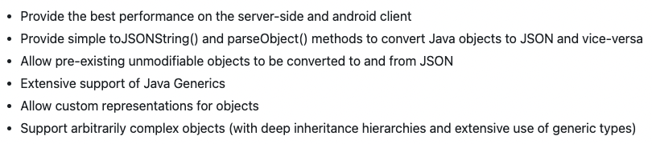
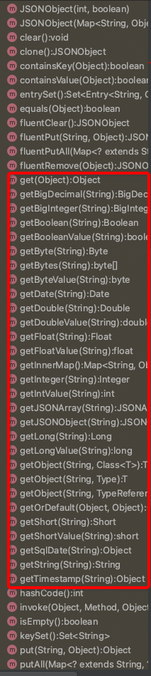

【库】fastjson知多少¶

fastjson知多少¶
fastjson介绍¶
fastjson是一个Java库，用来在Java对象和JSON之间相互转换。
fastjson的目标（官方原话）：

我翻译一下：
性能非常好；
封装非常高；
转换非常强；
泛型也支持；
自定义表示；
复杂也支持；
这6个目标，书读少的我理解起来费劲，看着这些字，视线开始模糊…突然这些字动了，不断变幻，凝聚成了两个字：“牛逼”。阿里巴巴也确实做到了，fastjson(24.9k star)作为国产原创库，PK掉了jackson(7.6k star)和gson(21.3k star)，在国内应用领域坐上了头把交椅。
安装fastsjon¶
Maven引入：
<dependency>
<groupId>com.alibaba</groupId>
<artifactId>fastjson</artifactId>
<version>VERSION_CODE</version>
</dependency>
版本可以在 https://mvnrepository.com/artifact/com.alibaba/fastjson 查找：

虽然2.0.x版本出来了，但是使用得多的还是1.2.x版本。至少得1.2.48以上，因为这以下的版本之前出过轰动全国的安全漏洞。
入门示例¶
Group.java
public class Group {
private Long id;
private String name;
private List<User> users = new ArrayList<User>();
public Long getId() {
return id;
}
public void setId(Long id) {
this.id = id;
}
public String getName() {
return name;
}
public void setName(String name) {
this.name = name;
}
public List<User> getUsers() {
return users;
}
public void setUsers(List<User> users) {
this.users = users;
}
public void addUser(User user) {
users.add(user);
}
}
User.java
public class User {
private Long id;
private String name;
public Long getId() {
return id;
}
public void setId(Long id) {
this.id = id;
}
public String getName() {
return name;
}
public void setName(String name) {
this.name = name;
}
}
编码，Java对象转换为JSON：
import com.alibaba.fastjson.JSON;
Group group = new Group();
group.setId(0L);
group.setName("admin");
User guestUser = new User();
guestUser.setId(2L);
guestUser.setName("guest");
User rootUser = new User();
rootUser.setId(3L);
rootUser.setName("root");
group.addUser(guestUser);
group.addUser(rootUser);
// toJSONString方法
String jsonString = JSON.toJSONString(group);
System.out.println(jsonString);
输出：
{"id":0,"name":"admin","users":[{"id":2,"name":"guest"},{"id":3,"name":"root"}]}
解码，JSON转换为Java对象：
String jsonString = ...;
// parseObject方法
Group group = JSON.parseObject(jsonString, Group.class);
fastjson封装了JSON类的toJSONString()和parseObject()方法，来实现Java对象和JSON之间相互转换。
在JSON转换为Java对象时，传入的String可以写在单行：
String jsonString = "{\"id\":0,\"name\":\"admin\",\"users\":[{\"id\":2,\"name\":\"guest\"},{\"id\":3,\"name\":\"root\"}]}";
也可以格式化后复制粘贴为多行：
String jsonString = "{\n" +
" \"id\":0,\n" +
" \"name\":\"admin\",\n" +
" \"users\":[\n" +
" {\n" +
" \"id\":2,\n" +
" \"name\":\"guest\"\n" +
" },\n" +
" {\n" +
" \"id\":3,\n" +
" \"name\":\"root\"\n" +
" }\n" +
" ]\n" +
"}";
单行和多行都能够转换成功。
字符串转JSON提取数据¶
除了Java对象和JSON相互转换以外，还有个对于测试来说，更为常见的使用场景：把字符串转为JSON，提取其中某些字段的数据。
这也很简单，parseObject()方法不传第二个参数，返回的就是一个JSONObject对象：
String jsonString = ...;
// parseObject方法
JSONObject jsonObj = JSON.parseObject(jsonString);
JSONObject提供了一系列不同数据类型的get()方法来提取数据：

对号入座提取想要的数据就可以了。
参考资料：
fastjson源码 https://github.com/alibaba/fastjson
fastjson详解 https://blog.csdn.net/cold___play/article/details/124525519